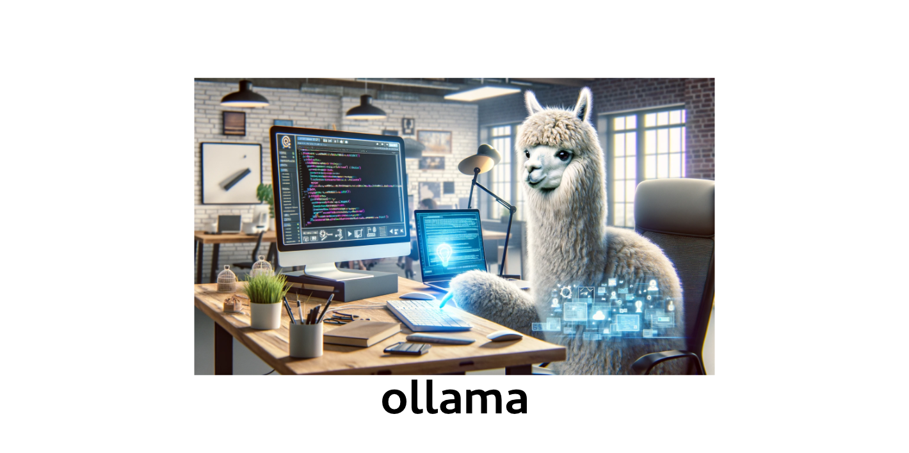
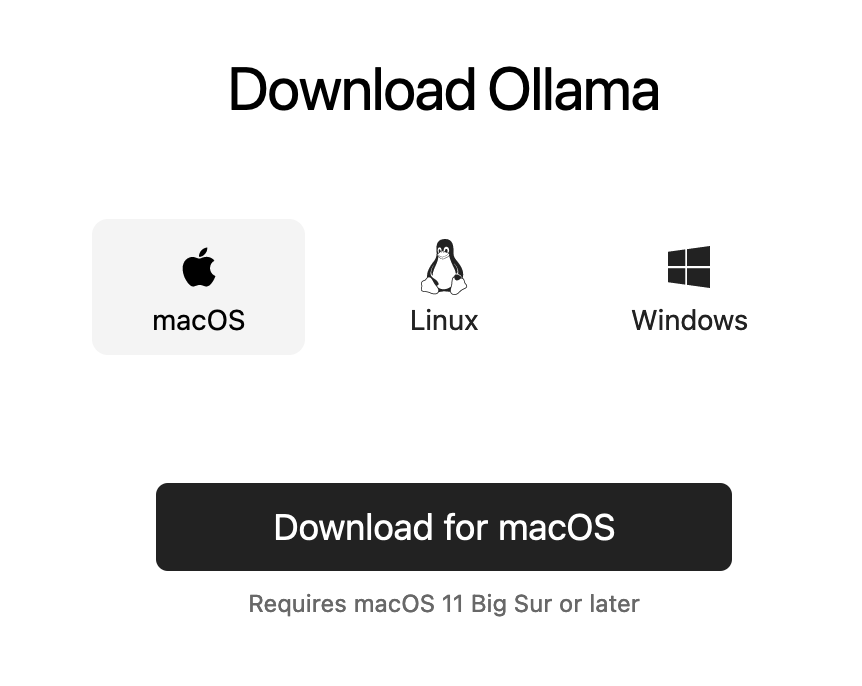
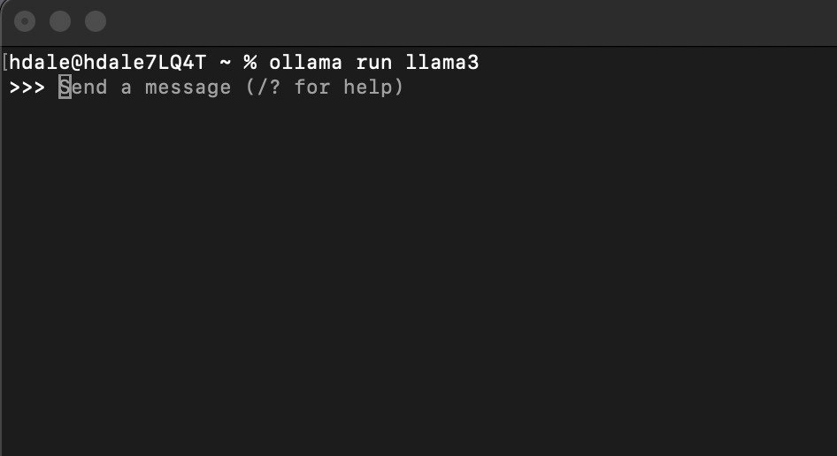

Automation Code Creation with ollama

My review on using ollama to help create code for Automation
"By harnessing the power of AI, I simplify my coding workflow, freeing up time to focus on creating blog posts that resonate with the vCommunity. With the help of AI, my writing becomes more precise, more creative, and more impactful.” - Dale Hassinger
ollama

ollama Web Site Link:
Building on my experience with ChatGPT, I decided to explore Ollama Local on my trusty Apple MacBook Pro M1. As a user-friendly AI enthusiast, I was eager to see how seamless the installation process would be. To my delight, setting up Ollama Local on Mac is incredibly straightforward.
To get started, simply head to the Ollama website and download the application as a zip file. Expand the contents of the archive and copy the Ollama Application file into your Applications folder. Double-clicking the icon will launch the app in no time – it's that easy!
For this review, I'll be using the Llama3 Large Language Model (LLM) to demonstrate Ollama Local's capabilities. The first time you run the application, it will automatically download the necessary LLM files for you. Like I said, very easy to use.
With Ollama Local up and running, let's dive into its features and see what kind of AI-powered magic it can create.
Go to a terminal and type "ollama run llama3" to get started.
Code:
ollama run llama3
ollama Models:
There are many models to pick from to use with ollama...

Once you've chosen the desired model, the web site will provide you with the necessary command prompts to get started. No need to dig through complex documentation or struggle with unfamiliar code - just follow the straightforward instructions and you're good to go!

How to run ollama from cli:
Here is a quick video to show how to get started from the CLI
- Run command to start ollama
- Ask a question and see the results
- type /bye to exit ollama
Hands-on experience with this tool? A breeze! Not only is it incredibly user-friendly, but the performance on my laptop has been impressive too. And what really stands out is the speed at which responses are delivered - no waiting around here! The unedited video itself
is a testament to its fast processing capabilities.

Code:
ollama run llama3
>>> Who Created PowerShell
>>> /byeollama "Real World" Examples:
Now I will show some examples of how I use ollama everyday for coding and writing. They are my main uses cases for AI.
ollama PowerShell Function
In my previous blogs, I've highlighted the versatility of PowerShell in automating various tasks. In this blog, I'll show how to harness the power of PowerShell to interact with AI assistants like Ollama. To start, I created a custom function that enables you to ask Ollama questions directly from the PowerShell command line. Here's the sample code to get you started:
Code:
# Function to ask Ollama
function ask-ollama {
# Code to run when the function is called
param (
[Parameter(Mandatory=$true)]
$question
)
# Set request body
$requestBody = @{
model = "llama3";
prompt = "$question";
stream = $false;
}
# Set headers
$headers = @{'Content-Type'='application/json'}
$Body = ($requestBody | ConvertTo-Json)
# Send the request
$request =Invoke-WebRequest -Uri 'http://localhost:11434/api/generate' -Method Post -Headers $headers -Body $Body
$response =$request.Content | ConvertFrom-Json
# Print response to console
Write-Host $response.response
# Copy response to clipboard
Set-Clipboard -Value $response.response
} # End Function
# ----- Example Questions -----
ask-ollama -question "What is PowerCLI"
ask-ollama -question "Create a PowerShell script to connect to a vCenter, Get a list of all VMs with a Snap"
ask-ollama -question "Create a Salt State file to stop and disable a service with a name of Spooler"
ask-ollama -question "Show me how to copy a powershell variable value to the clipboard"If you are a PowerShell enthusiast, you're probably accustomed to the flexibility of functions within your scripts. Feel free to adapt this example to your own workflow and coding style, regardless of whether you prefer to use it as is or modify it to fit your needs.
ollama Prompt Engineering Examples:
Set the 'Role' to start:
One of my habits when working with ollama, or ChatGPT, is setting a specific 'role' for our conversations. By defining a clear context or persona, I've found that I'm able to receive more effective and insightful responses from the AI. This approach has been refined over time through experimentation and exploration of the product's capabilities, yielding better results and a more productive dialogue.
- Act as a PowerShell SME
- Act as a PowerCLI SME
- Act as a VMware SME
- Act as a vRealize SME
- Act as a Javascript SME to work with VMware Orchestrator
- Act as a Technology Blogger
Questions to generate code:
- PowerCLI:
- Act as a PowerCLI SME
- Create a script to connect to a VMware vCenter. username is administrator@vsphere.local. password is Password123. vCenter name is vcenter8x.corp.local. List all VMs that have a snap. Export the list of VMs with a snap to c:\reports\vms-with-snaps.csv.
Unedited Code Returned:
Code:
# Set the connection settings
$vcenter = "vcenter8x.corp.local"
$username = "administrator@vsphere.local"
$password = "Password123"
# Connect to the vCenter using PowerCLI
Connect-VIServer -Server $vcenter -User $username -Password $password -ErrorAction Stop
# Get a list of all VMs that have a snapshot
$vmsWithSnaps = @()
Get-VM | Where-Object {$_.HasSnapshot} | ForEach-Object {
$vm = $_.Name
Write-Host "Found snapshot for VM: $vm"
$vmsWithSnaps += $vm
}
# Export the list of VMs with a snap to a CSV file
$vmsWithSnaps | Export-Csv -Path "C:\reports\vms-with-snaps.csv" -NoTypeInformation
# Disconnect from the vCenter
Disconnect-VIServer -Confirm:$falseLet me explain what each part of the script does:
1. The first section sets the connection settings: vcenter, username, and password.
2. The Connect-VIServer cmdlet connects to your VMware vCenter using the specified credentials.
3. The Get-VM cmdlet retrieves a list of all virtual machines in the vCenter. We then use the Where-Object cmdlet to filter this list and
only include VMs that have at least one snapshot ($_.HasSnapshot).
4. We loop through each VM that has a snapshot using a ForEach-Object cmdlet, and add its name to an array $vmsWithSnaps.
5. The final section exports the array of VM names to a CSV file named vms-with-snaps.csv in the C:\reports directory.
6. Finally, we disconnect from the vCenter using the Disconnect-VIServer cmdlet.
Save this script as a PowerShell file (e.g., vms_with_snaps.ps1) and run it to get the list of VMs with snapshots exported to the specified
CSV file!